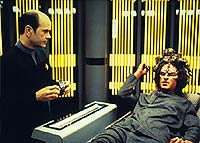
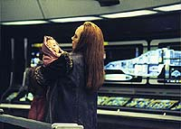
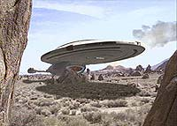
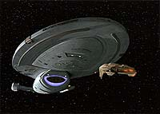
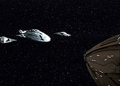
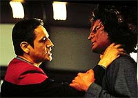
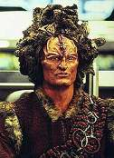

|
MANCHETE
DO EPISDIO
Episdio deixa tripulao abandonada,
em belo fechamento da temporada
Episdio
anterior | Prximo
episdio
Sinopse:
Data Estelar: desconhecida.
 Enquanto
Tuvok ajuda na reabilitao do alferes Suder, Chakotay recebe uma
mensagem subespacial desesperada de Seska. Ela diz que deu a luz
criana que foi concebida atravs da amostra roubada de DNA do
comandante e afirma que seu amante Kazon, Maje Culluh, levou a criana
consigo.
Chakotay fica abalado com o acontecimento. Seska no nem um
pouco confivel e poderia estar atraindo a Voyager para uma
emboscada. Mas se o beb realmente for dele, merece toda a ajuda
possvel. A tripulao apia seu primeiro-oficial na deciso de
procurar Seska e o recm-nascido. No entanto, a caminho a Voyager
recebe um sinal de socorro de uma nave auxiliar Kazon tripulada por
Tierna, um dos auxiliares da cardassiana. Ele acabara de sobreviver
a um ataque de Culluh.
 A
Voyager segue rumo a uma colnia para onde o Maje teria mandado o
filho de Chakotay e, no percursso, sofre pequenos ataques kazons,
embora nenhum cause srios danos. Ainda assim, o fato de todos os
ataques se centrarem em uma rea especfica da nave deixa todos
desconfiados. Quando a capit ordena que Paris altere a rota, a
Voyager subitamente confrontada por oito naves grandes, uma
tentativa clara de coagi-los para outra direo. Nem um pouco
disposta a ser manipulada, Janeway decide intercept-las.
Usando seus prprios truques, a tripulao consegue espantar
quatro das naves inimigas e parte para o combate. Porm, medida
que a batalha se intensifica, Tierna deliberadamente explode seu prprio
corpo para danificar a Voyager. Os sistemas secundrios caem e a
situao fica complicada para a capit. Paris parte em uma nave
auxiliar para buscar a ajuda de uma colnia talaxiana na regio,
mas em pouco tempo o tenente perde o contato com seus colegas.
 Intrusos
Kazons invadem a nave mutilada e Janeway forada a se render. Os
vitoriosos Culluh e Seska, mais unidos do que nunca, tomam o
controle. Na enfermaria, o Doutor se desativa secretamente por doze
horas; o alferes Suder esconde-se pelos tubos de acesso. Os Kazons
ento abandonam a tripulao em um planeta primitivo e partem
para a conquista do quadrante Delta.
Continua...
Comentrios:
"Basics,
Part I" fecha muito bem a temporada, por vrios motivos.
Em primeiro lugar, porque deixa o telespectador bastante ansioso
pela segunda parte da histria. Depois, porque traz de volta os
maiores viles da srie at ento --Kazons e Seska-- e
desenvolve bem personagens --Chakotay e Suder. Alm disso,
repleto de fantsticos efeitos especiais e abre uma problemtica
indita na srie.
 Foram
muitos os questionamentos levantados: O que a tripulao far
agora, j que no tem tecnologia alguma? O que Seska e Culluh vo
fazer com a Voyager? O que acontece com Suder, Paris e o Doutor? "Basics"
o primeiro episdio-duplo da srie (com exceo de "Caretaker"),
assim como o primeiro "cliffhanger".
Pde-se ver que a continuidade do seriado foi bastante valorizada
aqui, mantendo o arco de histrias da temporada. Isso mesmo, ao
contrrio do que muitos dizem, Voyager consegue encadear
seus episdios. Pudemos ver a volta de Suder, o alferes betazide
que foi encarcerado aps assassinar um membro da tripulao em
"Meld". Vimos tambm o retorno do malfico Culluh e de
sua eterna comparsa Seska, sem falar no "kamikaze" Tierna,
introduzido em "Maneuvers"
e em Kolopak, o pai de Chakotay (visto pela primeira vez em "Tattoo").
 Quanto
ao roteiro, no fundo todos sabiam que tudo acabaria em emboscada,
mas no se pode imaginar a tripulao agindo de forma diferente.
Conhecendo Chakotay, com seus cdigos de honra e qualidades
espirituais, teria sido muito difcil prosseguir com a jornada para
casa sem levar em conta o resgate da criana; e Seska sabia disso.
Ela consegue manipul-lo e atingi-lo, embora o comandante no
consiga admitir tal vulnerabilidade. Janeway tambm acaba sendo
manipulada. S percebe a armao quando tarde demais e, com a
oportunidade nica, Culluh a rebaixa ao mais inferior patamar.
As cenas finais foram muito boas. A tripulao inteira confinada a
um hangar de carga, incapaz de reagir e, em seguida, totalmente
desamparada em um planeta deserto. A capit com lgrimas nos olhos
ao ver seu nico meio de voltar para casa desaparecer nas nuvens. No
se pode deixar de citar o humor sempre presente na srie e seu
grande piv: o Doutor.
 Mas
alguns aspectos do episdio desagradaram um pouco. Por que Janeway
tinha que tratar Suder do modo como o fez? Afinal, o alferes queria
ajudar de verdade, no tinha segundas intenes. irnico o
fato de ela querer evit-lo, quando em "Meld"
foi grande defensora de sua reabilitao. Outra coisa que ainda
perturba a inconsistncia na personalidade de Seska. Em "State
of Flux", ela at tinha uma boa justificativa para
violar os regulamentos da Voyager; queria apenas assegurar a
sobrevivncia da nave no setor. Mas o que ela quer agora? Desde "Maneuvers",
tem-se a impresso de que no est nem a em voltar para o
quadrante Alfa. Ser que ela deseja ficar para sempre sombra do
machista Maje Culluh?
Citaes:
 Janeway
- "She knows you, Chakotay. She knew how you would react when
you saw your son in danger."
("Ela te conhece, Chakotay. Sabia como voc reagiria quando
visse seu filho em perigo.")
Janeway - "Please, Doctor, your suggestions on any subject
are always welcome."
("Por favor, Doutor, suas sugestes em qualquer assunto so
sempre bem-vindas.").
Doutor - "Really? In that case you may expect several more
on a variety of matters in the near future."
(Srio? Nesse caso pode esperar vrias outras sugestes em uma
variedade de assuntos, num futuro prximo.)
Culluh - "You'll be given no more respect than a Kazon woman.
Now that your ship and technology are mine, I'll tell you when to
speak."
("Voc no ter mais respeito do que qualquer outra mulher
Kazon. Agora que sua nave e tecnologia so minhas, eu lhe direi
quando falar.")
Trivia:
 O episdio o ltimo da segunda temporada e divide-se em duas
partes. "Basics, Part II" abre a temporada
seguinte; essa tambm a ltima trama envolvendo os Kazons na srie.
O episdio o ltimo da segunda temporada e divide-se em duas
partes. "Basics, Part II" abre a temporada
seguinte; essa tambm a ltima trama envolvendo os Kazons na srie.
O ttulo do episdio retrata, segundo Michael Piller, o seu desejo
de fazer uma histria bsica: muita ao e aventura.
A opinio do produtor Kenneth Biller que "este um dos
episdios mais bem dirigidos da srie".
Ainda segundo Ken Biller, eles no queriam mais episdios com os
Kazon, mas aps muitas discusses e reunies, Michael Piller
aprovou a idia de fechar a temporada com eles.
(Fonte: Cinescape Special
Double-Vol. 28-Number 4/5-1996)
Ficha
tcnica:
Escrito por Michael Piller
Direo de Winrich Kolbe
Exibido em 20/06/1996
Produo: 042
Elenco:
Kate Mulgrew como
Kathryn Janeway
Robert Beltran como Chakotay
Roxann Biggs-Dawson como B'Elanna Torres
Robert Duncan McNeill como Tom Paris
Jennifer Lien como Kes
Ethan Phillips como Neelix
Robert Picardo como Doutor
Tim Russ como Tuvok
Garrett Wang como Harry Kim
Elenco convidado:
Brad Dourif como Suder
Anthony DeLongis como Primeiro Maje Culluh
John Gegunhuber como Tierna
Martha Hackett como Seska
Henry Darrow como Kolopak
Episdio
anterior | Prximo
episdio
|